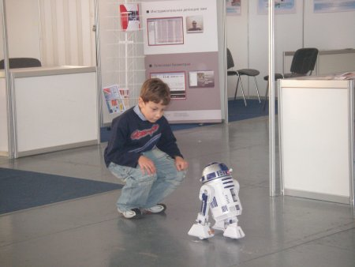
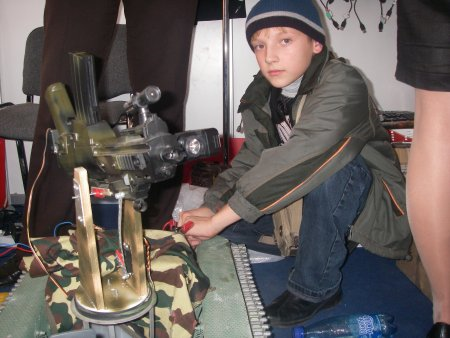
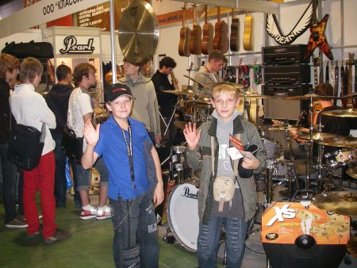
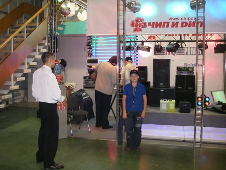

Экскурсионная программа

- "Робототехника"
- «Музыка Москва 2007»
- "Чип и Дип"
"Робототехника"
Учащиеся кружков посетили выставку робототехники которая проходила 17-20 октября на ВВЦ. Ребята заинтересовались устройством простейших роботов, наблюдали показательные выступления андроидных роботов, приобщились к основам нанотехнологии и кибернетике.

Особенно отличился Батанин Толя, который починил модель робота-танка, который случайно сломали другие дети, за что получил благодарность устроителей выставки.

«Музыка Москва 2007»
Учащиеся «Лаборатории звука» 5 октября посетили выставку аудиотехники в Сокольниках «Музыка Москва 2007». На выставке ребята познакомились с новейшими достижениями мировых производителей в области воспроизведения звука, оборудования для дискотек, цветомузыкальный устройств, лазерных световых эффектов.

Особенно приятно было получить от организаторов памятные подарки (бейсболки, наклейки, бэджики).
«Чип и Дип" в Перово
По просьбе учащихся кружка радиоконструирования руководство фирмы «Чип и Дип» предоставила возможность провести выездное занятие в торговом зале в Перово. Менеджеры рассказали ребятам о правильности выбора инструментов, приборов и радиодеталей для конструирования и изготовления радиоаппаратуры; познакомили ребят с радиоуправляемыми моделями автомобилей и самолетов, с дискотечным оборудованием и устройствами системы «Умный дом».

Всем кружковцам была предоставлена возможность приобрести радиоэлектронные наборы и инструменты для конструирования с максимальной скидкой. Ребята ознакомились с выставкой поделок – игрушек из неликвидных деталей и запчастей.